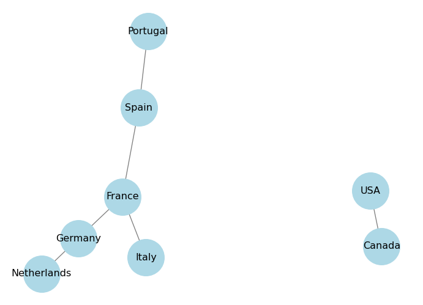
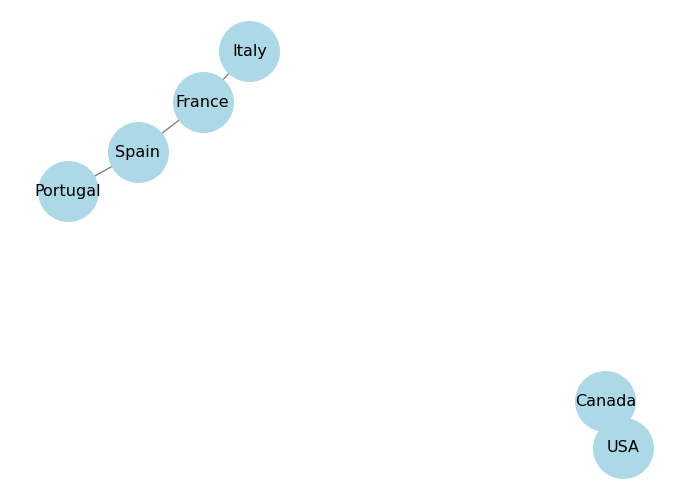
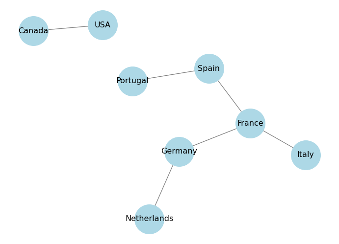
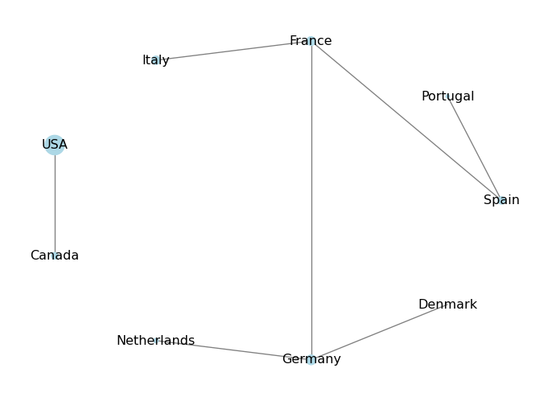
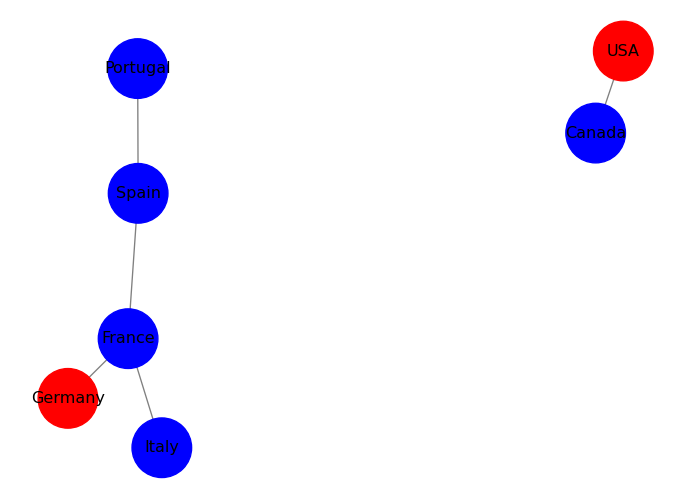
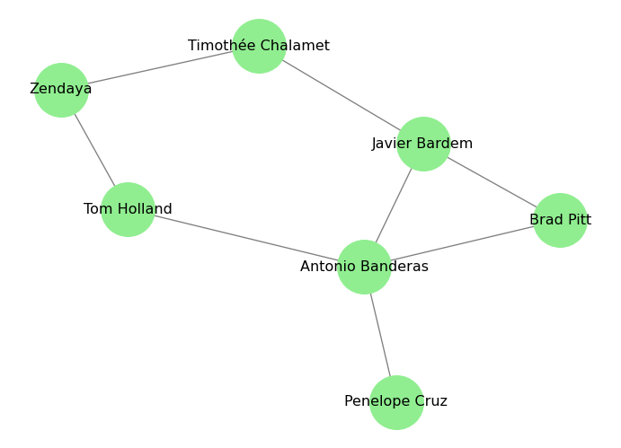
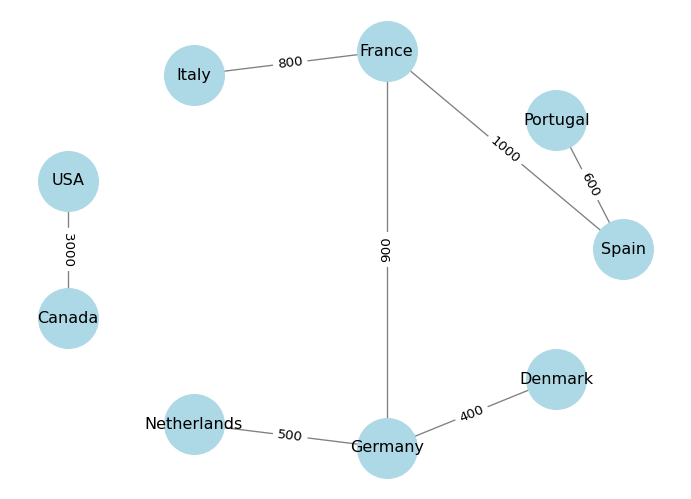
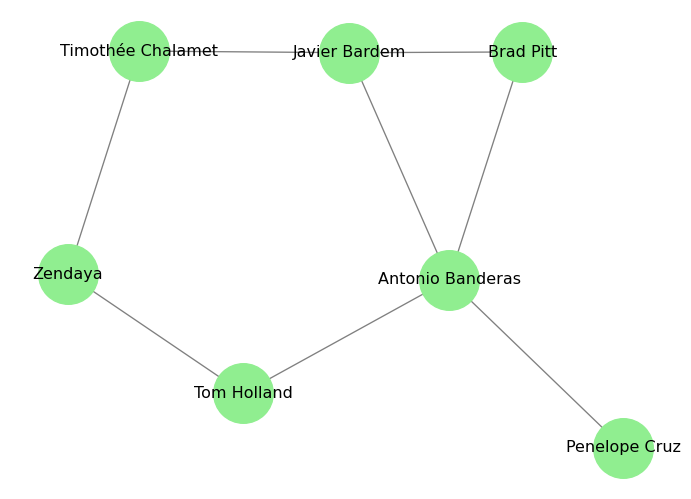

G = nx.Graph()
print(G)Graph with 0 nodes and 0 edgesNodes and Edges
A graph is a mathematical structure used to model pairwise relations between objects. It consists of nodes (also called vertices) and edges (also called links) that connect pairs of nodes.
In this page, we will explore the basic elements of a graph using the networkx library in Python. We will cover:
networkx.First, let’s import the necessary library:
If you get a ModuleNotFoundError for networkx, you may need to install it first.
If you are working on Google Colab, you can run:
!pip install networkxIf you are working in a local Python environment, use conda or run:
pip install networkxAnd now we can initialize an empty graph:
G = nx.Graph()
print(G)Graph with 0 nodes and 0 edgesOur variable G is now an empty undirected graph object. We can add nodes and edges to it, which we will see in the next sections.
Nodes represent the entities in a graph. They can be anything: people in a social network, airports in a flight network, or web pages in the internet.
In order to add nodes to our graph, we can use the add_node(<id>) method. The <id> can be any hashable Python object. We can see the list of nodes in the graph using the nodes() method.
# Add three nodes to the graph
G.add_node("Spain")
G.add_node("Portugal")
G.add_node("France")
# Show the nodes in the graph
print(G.nodes())['Spain', 'Portugal', 'France']In Python, a hashable object is an object that has a hash value that remains constant during its lifetime. This means that the object can be used as a key in a dictionary or as an element in a set. Examples of hashable objects include integers, strings, and tuples (as long as they contain only hashable types). Lists and dictionaries are not hashable because they are mutable (their contents can change).
Each node can have attributes that provide additional information about it. For example, in a social network, a node might represent a person and have attributes like name, age, or location.
NetworkX allows us to store attributes into nodes. Think of G.nodes as a dictionary where the keys are the node IDs and the values are dictionaries of attributes. We can add attributes to a node by accessing it through G.nodes[<id>] and assigning values to the attributes.
For example, we can add a “population” attribute to our country nodes:
# Add population attribute to the nodes
G.nodes["Spain"]["population"] = 47_000_000
G.nodes["Portugal"]["population"] = 10_000_000
G.nodes["France"]["population"] = 67_000_000
# Show the nodes with their attributes
population = nx.get_node_attributes(G, 'population')
for node, pop in population.items():
print(f"{node}: {pop} inhabitants")Spain: 47000000 inhabitants
Portugal: 10000000 inhabitants
France: 67000000 inhabitantsUsing get_node_attributes(G, 'population'), we can retrieve the population attribute for all nodes in the graph as a dictionary.
If you are including a new node and want to add attributes at the same time, you can use the add_node() method with keyword arguments. For example:
# Add a new node with attributes
G.add_node("Italy", population=60_000_000)
# Show the nodes with their attributes
population = nx.get_node_attributes(G, 'population')
for node, pop in population.items():
print(f"{node}: {pop} inhabitants")Spain: 47000000 inhabitants
Portugal: 10000000 inhabitants
France: 67000000 inhabitants
Italy: 60000000 inhabitantsEdges represent the connections between nodes in a graph. To add edges to our graph, we can use the add_edge(<node1>, <node2>) method. This will create an undirected edge between node1 and node2 (we use their IDs here). We can see the list of edges in the graph using the edges() method.
# Add edges between the nodes (neighboring countries)
G.add_edge("Spain", "Portugal")
G.add_edge("Spain", "France")
# Show the edges in the graph
print(G.edges())[('Spain', 'Portugal'), ('Spain', 'France')]Because we are working on an undirected graph, the connection between two nodes does not have a direction. However, we can also create directed graphs where the edges have a direction (from one node to another) using DiGraph() instead of Graph(). In a directed graph, we would use add_edge(<source>, <target>) to specify the direction of the edge.
Just like nodes, edges can also have attributes, such as weight, which might represent the strength of the connection. For example, in a social network, an edge might represent a friendship between two people, and the weight could represent how close they are.
We can add attributes to an edge by accessing it through G.edges[<node1>, <node2>] and assigning values to the attributes. For example, we can add a “distance” (between capitals) attribute to represent the distance between the countries:
# Add distance attribute to the edges
G.edges["Spain", "Portugal"]["distance"] = 600 # distance in kilometers
G.edges["Spain", "France"]["distance"] = 1000 # distance in kilometers
# Show the edges with their attributes
distance = nx.get_edge_attributes(G, 'distance')
for edge, dist in distance.items():
print(f"{edge}: {dist} km")('Spain', 'Portugal'): 600 km
('Spain', 'France'): 1000 kmUsing get_edge_attributes(<graph>, <attribute>), we can retrieve the distance attribute for all edges in the graph as a dictionary.
Again, you can also add attributes to an edge at the same time as you create it using the add_edge() method with keyword arguments. For example:
# Add a new edge with attributes
G.add_edge("France", "Italy", distance=800)
# Show the edges with their attributes
distance = nx.get_edge_attributes(G, 'distance')
for edge, dist in distance.items():
print(f"{edge}: {dist} km")('Spain', 'Portugal'): 600 km
('Spain', 'France'): 1000 km
('France', 'Italy'): 800 kmWe can also add nodes and edges together using the add_edge() method. If we try to add an edge between two nodes that do not exist in the graph, networkx will automatically create those nodes for us. For example:
# Add an edge between two nodes that do not exist
G.add_edge("USA", "Canada", distance=3000)
G.add_edge("Netherlands", "Germany", distance=500)
G.add_edge("Germany", "France", distance=900)
# In this case, we will have to add the population attribute for the new nodes separately
G.nodes["USA"]["population"] = 331_000_000
G.nodes["Canada"]["population"] = 38_000_000
G.nodes["Netherlands"]["population"] = 17_000_000
G.nodes["Germany"]["population"] = 83_000_000
# Show the nodes and edges in the graph
print("Nodes:", G.nodes())
print("Edges:", G.edges())Nodes: ['Spain', 'Portugal', 'France', 'Italy', 'USA', 'Canada', 'Netherlands', 'Germany']
Edges: [('Spain', 'Portugal'), ('Spain', 'France'), ('France', 'Italy'), ('France', 'Germany'), ('USA', 'Canada'), ('Netherlands', 'Germany')]The most common edge attribute is weight, which represents the strength of the connection between two nodes. For example, in a social network, the weight of an edge could represent how close two people are. In a transportation network, the weight could represent the distance or travel time between two locations.
Weight is so common that networkx has a special method to add weighted edges: add_weighted_edges_from(). This method takes a list of tuples, where each tuple contains the source node, target node, and weight of the edge. For example:
# Initialize a directed graph
D_contracts = nx.DiGraph()
# Add weighted edges (contracts between companies with the amount of money as weight)
# Disclaimer: weights are made up
weighted_edges = [
("OpenAI", "Microsoft", 100_000_000),
("OpenAI", "Oracle", 50_000_000),
("Microsoft", "Nvidia", 20_000_000),
("Oracle", "Nvidia", 10_000_000),
("Nvidia", "OpenAI", 5_000_000),
]
D_contracts.add_weighted_edges_from(weighted_edges)
# Show the edges with their weights
weights = nx.get_edge_attributes(D_contracts, 'weight')
for edge, weight in weights.items():
print(f"{edge}: ${weight}")('OpenAI', 'Microsoft'): $100000000
('OpenAI', 'Oracle'): $50000000
('Microsoft', 'Nvidia'): $20000000
('Oracle', 'Nvidia'): $10000000
('Nvidia', 'OpenAI'): $5000000Printing the graph object gives us a summary of its structure, but it doesn’t show us the actual connections. To visualize the graph, we can use the draw() function from networkx, which uses Matplotlib to display the graph.
import matplotlib.pyplot as plt
# Draw the graph
nx.draw(
G,
with_labels=True, # show node labels (IDs)
node_color='lightblue', # color of the nodes (vertices)
edge_color='gray', # color of the edges (links)
node_size=2000, # size of the nodes (vertices)
font_size=12 # size of the labels (IDs)
)
plt.show()
The draw() function has a pos parameter that allows us to specify the layout of the graph. A layout is a way to position the nodes in the graph for visualization. networkx provides several built-in layouts, such as spring_layout, circular_layout, and shell_layout.
Circular layout arranges the nodes in a circle. You can control the distance between the nodes using the scale parameter, higher values will make the nodes farther apart.
# Use the circular layout for visualization
pos = nx.circular_layout(G, scale=2) # scale controls the distance between the nodes
nx.draw(
G,
pos=pos, # specify the layout
with_labels=True,
node_color='lightblue',
edge_color='gray',
node_size=2000,
font_size=12
)
plt.show()
Spring layout uses a force-directed algorithm to position the nodes in a way that minimizes edge crossings and evenly distributes the nodes. You can control the distance between the nodes using the k parameter, which is a scaling factor for the optimal distance between nodes. Higher values will make the nodes farther apart. You can also control the number of iterations of the algorithm using the iterations parameter.
# Use the spring layout for visualization
pos = nx.spring_layout(G, k=0.5, iterations=20)
nx.draw(
G,
pos=pos, # specify the layout
with_labels=True,
node_color='lightblue',
edge_color='gray',
node_size=2000,
font_size=12
)
plt.show()
Shell layout arranges the nodes in concentric circles. You can specify which nodes belong to which circle using the nlist parameter, which is a list of lists of nodes.
nlist = [["Spain", "Portugal", "France", "Italy"], ["Netherlands", "Germany", "USA", "Canada"]]
pos = nx.shell_layout(G, nlist=nlist)
nx.draw(
G,
pos=pos, # specify the layout
with_labels=True,
node_color='lightblue',
edge_color='gray',
node_size=2000,
font_size=12
)
plt.show()
We can also visualize the attributes of nodes and edges by using different colors or sizes. For example, we can color the nodes based on their population attribute:
# Get the population attribute for each node
population = nx.get_node_attributes(G, 'population')
# Draw the graph with node sizes proportional to population
node_sizes = [population[node] / 1_000_000 for node in G.nodes()] # scale down for visualization
pos = nx.circular_layout(G)
nx.draw(
G,
pos=pos,
with_labels=True,
node_color='lightblue',
edge_color='gray',
node_size=node_sizes, # size of the nodes (vertices) proportional to population
font_size=12,
)
plt.show()
In this case, the population dictionary will not have an entry for that node, and trying to access it will raise a KeyError. To avoid this, we can use the get() method of the dictionary, which allows us to specify a default value if the key is not found. For example:
# Add a new node without the population attribute
G.add_edge("Denmark", "Germany", distance=400)
# Get the population attribute for each node, using 0 as default if not found
population = nx.get_node_attributes(G, 'population')
# Draw the graph with node sizes proportional to population
node_sizes = [population.get(node, 0) / 1_000_000 for node in G.nodes()] # scale down for visualization
pos = nx.circular_layout(G)
nx.draw(
G,
pos=pos,
with_labels=True,
node_color='lightblue',
edge_color='gray',
node_size=node_sizes, # size of the nodes (vertices) proportional to population
font_size=12,
)
plt.show()
Exercise: Add a new attribute to the nodes, called “visited”, which is a boolean that indicates whether you have visited that country or not. Then, visualize the graph by coloring the nodes differently based on whether you have visited them or not: use blue for visited countries and red for unvisited countries.
# Add the "visited" attribute to the nodes
G.nodes["Spain"]["visited"] = True
G.nodes["Portugal"]["visited"] = True
G.nodes["France"]["visited"] = True
G.nodes["Italy"]["visited"] = True
G.nodes["USA"]["visited"] = False
G.nodes["Canada"]["visited"] = True
# Get the "visited" attribute for each node
visited = nx.get_node_attributes(G, 'visited')
# Define node colors based on the "visited" attribute
node_colors = ['blue' if visited.get(node, False) else 'red' for node in G.nodes()]
pos = nx.circular_layout(G)
# Draw the graph with node colors based on the "visited" attribute
nx.draw(
G,
pos=pos,
with_labels=True,
node_color=node_colors, # color of the nodes based on "visited" attribute
edge_color='gray',
node_size=2000,
font_size=12,
)
plt.show()
We can also visualize edge attributes by showing them as labels on the edges. For example, we can show the distance attribute on the edges:
# Get the distance attribute for each edge
distance = nx.get_edge_attributes(G, 'distance')
# Draw the graph
pos = nx.circular_layout(G)
nx.draw(
G,
pos=pos,
with_labels=True,
node_color='lightblue',
edge_color='gray',
node_size=2000,
font_size=12,
)
# Draw edge labels for the distance attribute
nx.draw_networkx_edge_labels(G, pos, edge_labels=distance)
plt.show()
In practice, we often have data in the form of an edge list, which is a list of pairs of nodes that are connected by edges. We can create a graph directly from an edge list using the from_edgelist() method. For example:
# Define our edge list (actors that have worked together in movies)
edge_list = [
("Antonio Banderas", "Brad Pitt"), # Interview with the Vampire (1994)
("Antonio Banderas", "Javier Bardem"), # Automata (2014)
("Antonio Banderas", "Penelope Cruz"), # Dolor y Gloria (2019)
("Antonio Banderas", "Tom Holland"), # Uncharted (2022)
("Brad Pitt", "Javier Bardem"), # F1 (2025)
("Javier Bardem", "Timothée Chalamet"), # Dune (2021)
("Timothée Chalamet", "Zendaya"), # Dune (2021)
("Tom Holland", "Zendaya"), # Spider-Man: No Way Home (2021)
]
# Create a graph from the edge list
G_actors = nx.from_edgelist(edge_list)
# Draw the graph
pos = nx.spring_layout(G_actors, k=0.15, iterations=20)
# k controls the distance between the nodes and varies between 0 and 1
# iterations is the number of times simulated annealing is run
# default k=0.1 and iterations=50
nx.draw(
G_actors,
pos=pos,
with_labels=True,
node_color='lightgreen',
edge_color='gray',
node_size=2000,
font_size=12
)
plt.show()
Exercise: In the code above, I included the movies in the comments next to the edges. Can you create a graph where the edges are labeled with the movie titles?
In the next page, we will learn how to analyze the structure of a graph by looking at its connectivity. We will learn about degree, path lengths, and connected components.